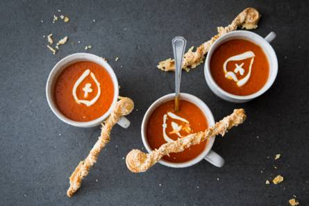

1. Snipper de ui. Snijd de knoflook fijn, de wortel in kleine blokjes en de tomaten in vieren. Ris de blaadjes van de takjes tijm.
2. Verhit 1 el olie uit het potje gegrilde paprika (per 4 personen) in een soeppan en fruit de ui, knoflook en wortel 5 min. op lage temperatuur.
3. Voeg de tijm en de tomatenpuree toe en bak al roerend 2 min. mee. Voeg de tomaten, het water en het runderbouillontablet toe.
4. Breng aan de kook en laat met de deksel op de pan 10 min. zachtjes koken.
5. Voeg de gegrilde paprika toe en breng op smaak met peper. Pureer met de staafmixer.
6. Verdeel de soep over de kommen. Roer de crème fraîche los met het water. Teken met behulp van een theelepel een crème fraîche-mijter in de soep. Serveer direct.
Tip Je kunt de soep t/m stap 3 een dag van tevoren maken. Laat afkoelen en bewaar afgedekt in de koelkast. Verwarm op middelhoog vuur en ga vlak voor serveren verder met stap 4.